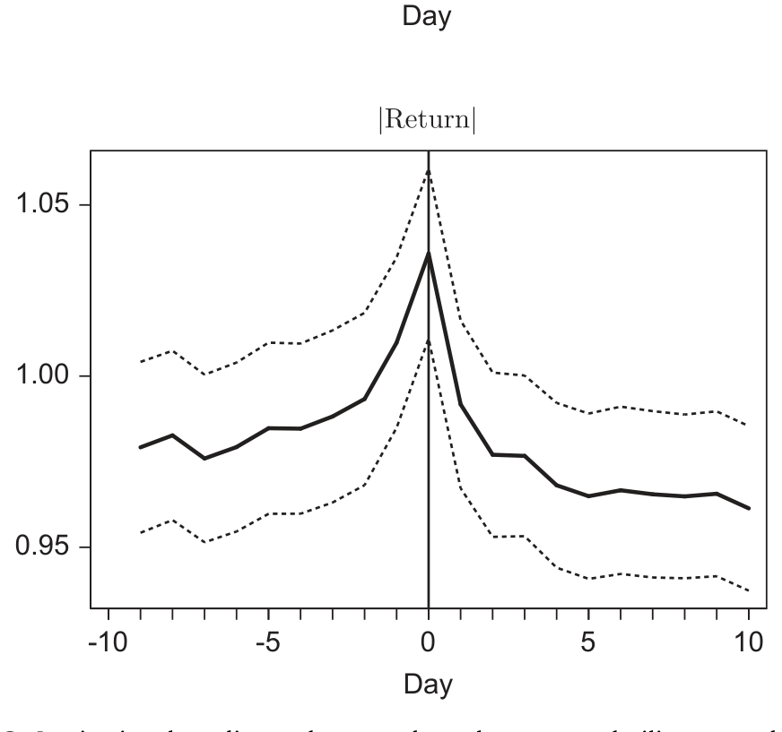
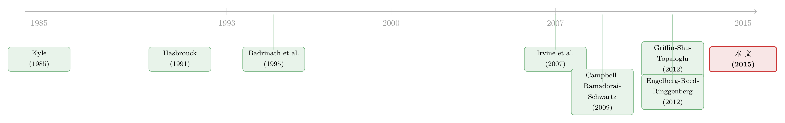

财报还没发，机构已经站好了队——一份非公开成交簿里的「知情」证据
本文读的是 Hendershott, Livdan & Schürhoff (2015, Journal of Financial Economics)：把纽交所全部机构买卖量与路透社全部新闻逐日拼起来后，作者发现机构的「净买入」能提前预测新闻会不会发生、新闻是好是坏、当天股价怎么反应、乃至盈余意外的方向——也就是说，与新闻有关的价格发现，有相当一部分在新闻见报之前、就已经通过机构交易完成了。
1 引言：玛莎·斯图尔特的法庭，和一群「先走一步」的机构
先讲一个故事。
2004 年初，家政女王玛莎·斯图尔特（Martha Stewart）正在纽约受审。指控源于一桩内幕交易：她的经纪人提前告诉她，制药公司 ImClone 的新药 Erbitux 没拿到 FDA 批准、股价要跌，于是她在公告前一天抛掉了约 23 万美元的 ImClone 股票。审判的焦点，是她名下的上市公司 Martha Stewart Living Omnimedia（MSO）。
作者把 MSO 这只股票的两条线画在一起：一条是累计股价，一条是机构净买入（买入量减卖出量）。在 2 月 27 日之前，机构基本按兵不动，净买入接近零。2 月 27 日，法官撤销了其中最重的证券欺诈指控——这本该是个好消息，MSO 当天大涨约 10%，并一直维持到 3 月 5 日宣判。
但奇怪的事发生了：股价在涨，机构却在疯狂抛售。从 2 月 27 日到 3 月 5 日，机构卖掉了 MSO 流通市值的整整 8%。3 月 5 日，斯图尔特最终被判共谋、妨碍司法等罪名成立，MSO 停牌；复牌后股价直接暴跌约 30%，而同一天机构又卖掉了 10% 的市值。
把这两段拼起来你会发现：机构大约一半的抛售发生在坏消息见报之前。换句话说，当散户还在为「欺诈指控被撤销」而欢呼、追着股价往上买的时候，机构已经读懂了「剩下那些罪名不会轻易脱身」这件事，悄悄离场了。
一个轶事当然说明不了什么。真正的问题是：把视野从玛莎·斯图尔特一只股票，放大到整个市场、所有新闻，机构是不是普遍地「知情」？ 这正是本文要回答的。
2 研究问题与为什么重要
机构交易在美股里举足轻重——它构成了日成交量的大头，机构也是上市公司最大的持有人。一个长期争论是：机构到底有没有「信息优势」？它们能直接和上市公司、券商投行打交道，雇得起买方分析师，养得起处理信息的技术团队，理论上应该比散户知道得更多。
可是，实证证据一直是混着的。围绕并购、盈余、分析师推荐这些具体事件去看机构订单流的研究，很多都找不到机构「先知先觉」的痕迹。为什么？本文给出的一个关键诊断是：数据不够全。
这就引出了本文的第一张王牌：数据。
3 数据：一份几乎「全量」的机构成交簿
机构交易数据来自纽交所的 合并股票审计追踪数据（Consolidated Equity Audit Trail Data, CAUD）。这套数据记录了在交易所成交的每一笔订单，其中一个字段 Account Type 标明了买方和卖方是不是机构投资者。作者剔除了程序化交易和指数套利（program trading 与 index arbitrage），因为这类订单是为了同时买卖一篮子证券，和单只股票的新闻关系不大。
这一步是本文相对前人最重要的「数据红利」。Griffin、Shu 和 Topaloglu (2012) 用的 Ancerno 数据只覆盖不到市场的一成；而历史上机构在纽交所的活跃度是纳斯达克的约五倍（Chan & Lakonishok, 1997）。所以「在纽交所、用近乎全量的成交簿」去看机构，本身就可能是「别人没看到、本文看到了」的原因。
新闻数据来自 汤森路透新闻分析（Thomson Reuters News Analytics, TRNA），跑在路透数据源（Reuters Data Feed, RDF）上。它用一个神经网络在句子层面给每条新闻打情绪分——之所以是句子级而非词典级，是因为「否定句式、形容词、副词」会改变一个词的含义，而且公司名里常含被词典判为正面的词（比如某公司就叫「Best」之类），逐词计数会被带偏。这与 Tetlock, Saar-Tsechansky & Macskassy (2008)、Loughran & McDonald (2011) 那一类词典法形成对照。
把 CRSP、TRNA 和纽交所数据从 2003 到 2005 年拼起来，剔除极少量缺失（0.51%），最终样本是 1,667 只纽交所股票、755 个交易日、超过一百万个「股票-日」观测。其中有新闻的「股票-日」共 126,148 个，占全部 1,096,514 个日度观测的一小部分——也就是说，任意一天大约 11.5% 的股票上了新闻。新闻覆盖高度不均：平均一家公司被报道的概率是 10.6%，中位数公司大约一个月上一次新闻（4.6%），但最活跃的 5% 公司高达 47.5%，最冷清的 5% 则是零。
核心变量是机构订单流（institutional order flow, IOF）。先定义机构买入与卖出，并用滞后一年（250 个交易日）的市值做归一化，再取差与和：
对应地，机构成交量（institutional volume, IVol）就是买卖之和：
$$IVol_{i,t} = IBuys_{i,t} + ISales_{i,t}, \qquad IOF_{i,t} = IBuys_{i,t} - ISales_{i,t}$$
IVol 度量的是「机构在不在场、动得凶不凶」（一个无方向的量），IOF 度量的是「机构在往哪个方向使劲」（一个有方向的量）。本文接下来的全部故事，都是围绕这两个量、一层层往里推。
新闻情绪本身也被聚合到「股票-日」层面：把每条新闻按相关度（relevance，即该公司被提及次数占全文提及次数的比例）加权，得到每只股票每天的净情绪，无新闻日记为零。最终情绪在 5%/95% 分位介于 −0.726 和 0.738，标准差 0.421，均值与中位数都接近零。
4 识别策略：一步步把「知情」逼出来
本文没有一个外生冲击式的「干净实验」，它的识别更像是层层设防的预测性检验：用机构在新闻之前的交易，去预测新闻之后才公开的东西。逻辑很直白——如果机构能系统性地「提前站对队」，那只能解释为它们事先就掌握了与新闻相关的信息。作者把这件事拆成了由浅入深的四问。
第一问：机构能预测「新闻会不会发生」吗？ 用事件研究（event study）看，机构成交量 IVol 在新闻公告前几天就开始抬升。再用日历时间 probit 回归（calendar-time probit），在控制了此前的股价波动率和此前的新闻之后，IVol 仍然能显著预测「今天会不会有新闻公告」。这说明机构知道「将有事发生」——但还不能说明它们知道这事是好是坏。
下面这张图就是这一步的证据：新闻发生前，机构成交量（以及股价波动率）已经先于公告抬升。

Figure 2: Institutional trading volume and stock return volatilityaround the news. For institutions to be informed about the
第二问：机构能预测「新闻的内容/方向」吗？ 这才是要害。作者用新闻情绪衡量「机构对未来信息的预判」，用公告当天的股价反应衡量「新闻里真正的信息含量」。事件研究显示：在好消息公告前 5 天以上，机构订单流 IOF 就开始上升；在坏消息公告前 5 天以上，IOF 开始下降。多元回归进一步确认：在控制了此前收益、此前情绪和成交量之后，IOF 显著预测新闻情绪与公告当日收益。再用向量自回归（vector autoregression, VAR）把收益、订单流、情绪三者更复杂的联合动态都纳进来，结论依旧。
这一步的经济量级有多大？ 作者套用 Campbell & Thompson (2008) 的框架算了一笔账：如果一个投资者能观察到某只股票的机构订单流，他对该股的预期收益可以按比例提高 40% 以上。这不是「统计显著但经济上微不足道」的那类结果。
第三问：到底是哪一类新闻，机构最知情？ 作者利用路透对新闻的分类逐类去看。一个有意思的对照是宏观新闻：由于宏观消息日的资产价格行为本就与平日不同（Savor & Wilson, 2014），作者单独检验了机构在宏观新闻前的交易，结果发现——机构虽然能预测宏观新闻日的收益，却只在一类宏观新闻上「顺着方向」交易：经济指标（economic indicators）类新闻。这很合理：宏观数据的发布时间是公开排定的，机构难有独家信息，唯独在「数据本身会偏向哪一面」上可能有一点预判。
第四问（也是最难被「反驳」的一问）：会不会是机构与记者「通气」、反过来影响了新闻情绪？ 如果是机构先交易、再「制造」出与之一致的新闻，那预测关系就成了伪因果。作者用盈余公告（earnings announcements）来挡这一刀——盈余里的长期基本面信息，是机构极难去影响的。结果：IOF 显著预测盈余意外的「惊奇」成分（surprise component）。机构不是在操纵新闻，它们是真的提前知道了基本面。
5 反转：那机构会不会「什么新闻都先动」？——一个漂亮的安慰剂
讲到这里，一个怀疑的读者会立刻反问：会不会机构只是「交易得多」，所以无论什么新闻它们都恰好提前动了，于是显出一种「知情」的假象？
作者的回应非常巧妙：他们去找一类几乎不含基本面信息的「新闻」，看机构在这类新闻前还动不动。这类新闻被称为炒作（hype），用两个代理变量来抓：
其一是新闻稿（press releases），数据来自 PRNewswire 和 BusinessWire。这类公司自己发的稿子，其情绪与股价收益的相关性只有微弱的 0.03，而其他新闻的「情绪-收益」相关性是 0.12——前者明显「水分大、信息少」。其二是事后被大幅反转的新闻（即被证明「错了」的消息）。
结果干净利落：用这两个代理，机构订单流在炒作类新闻前后都没有任何异常活动。也就是说，机构并不是「逢新闻必先动」，而是只在真正含基本面信息的新闻上才提前布局。这反过来，恰恰是对「机构知情」这一解释最有力的背书——它排除了「机构只是交易频繁」的平庸替代假说。
于是整条故事线收束到一句话：与新闻相关的价格发现，有相当一部分发生在新闻公布之前，并且是通过机构交易实现的。
6 文献脉络
把这篇文章放回它生长的那条线里，会看得更清楚。
最上游是知情交易的理论：Kyle (1985) 的连续拍卖与内幕交易模型，给出了「信息如何通过订单流逐渐渗入价格」的经典框架（关于 Kyle 模型里信息与订单流的博弈，可参见《谁把信息让给了对手？——一个 Kyle 模型里「越无知越愿意分享」的反转》）；Hasbrouck (1991) 则在实证上量化了「一笔成交里有多少信息含量」。

接着，一支文献开始问「机构是不是那个知情的人」。Badrinath, Kale & Noe (1995) 发现高机构持股的股票收益领先于低机构持股的股票；Sias & Starks (1997)、Boehmer & Kelley (2009) 发现更高的机构持股伴随更有效的定价；Irvine, Lipson & Puckett (2007) 那篇著名的「Tipping」，则发现机构在分析师正面初评报告公开前 5 天就开始放量、盈利性买入。
然后，一个自然的问题是——怎么在没有全量数据的情况下「看见」机构在交易？ Campbell, Ramadorai & Schwartz (2009) 的「Caught on tape」用 13-F 季度持仓变动配合日内分笔与买卖分类算法来推断机构交易，并发现它能预测盈余意外。本文与 CRS 同气连枝，但更进一步：本文的机构交易是直接观测而非推断，因而只有永久性价格冲击，没有 CRS 那种因「推断噪声」带来的暂时性成分；并且把 CRS「机构对盈余新闻知情」这一点，扩展到了各种类型的新闻。
但真正构成张力的，是另一批「找不到证据」的研究。Griffin, Shu & Topaloglu (2012) 用纳斯达克的经纪商标识，发现并购、盈余公告前一般机构并非净买入；Jegadeesh & Tang (2010)、Busse, Green & Jegadeesh (2012) 用 Ancerno 数据，也发现机构在并购、分析师推荐前后大体赚不到显著超额收益。本文的回应正是数据覆盖度——Ancerno 不到市场一成，而机构主战场在纽交所，所以本文（和 CRS）看见了知情、别人没看见。
最后是一条平行线：卖空也被认为是知情交易（Boehmer, Jones & Zhang, 2008 等）。但 Engelberg, Reed & Ringgenberg (2012) 发现，空头的优势主要来自对公开信息的更强分析能力，而非「抢在信息公开之前」。本文恰好站在了相反的一端：机构整体上能在信息成为公开新闻之前就预判到它。（关于「谁才是聪明钱、买卖双方各执一词」的话题，可参见《买卖双方各执一词：当 193 个异象告诉你「谁是聪明钱」》；关于经纪人/中间人比公开披露更早掌握信息，可参见《你的经纪人，比 SEC 公告知道得更多》。）
7 评论与延伸（Q&A + 研究方向）
(a) 几个可能的疑问
Q：「机构提前交易」一定等于「机构知情」吗？会不会只是它们对公开信号反应更快？
这正是本文最警惕的替代解释，也是它设计「炒作（hype）」安慰剂的原因。如果机构只是「对公开信息反应快」，那它在信息含量低的新闻稿前后也该有异常交易；但事实是没有——机构只在真正含基本面信息的新闻前提前布局。这把「快速反应公开信号」与「事前知情」做了切分，倾向于后者。当然，它无法 100% 排除「机构对某些公开但分散的线索整合得更快」（即 Engelberg-Reed-Ringgenberg 式的「更强分析」），本文也坦承数据无法区分「获取私有信息」与「超强信息处理」这两个微观来源。
Q：本文有没有真正的因果识别？它和「自然实验」差在哪？
没有外生冲击式的因果实验。本文的「识别」本质是预测性的：用新闻前的机构交易预测新闻后才公开的内容（情绪、当日收益、盈余意外），并辅以 VAR 控制联合动态。它的说服力来自「机构系统性地、跨多类新闻地提前站对队，且只在有信息的新闻上站队」，而非来自处理组/对照组的随机分配。所以它能强烈地支持知情假说，但严格意义上仍是相关性证据。
Q：为什么别人（Griffin et al.、Jegadeesh-Tang）找不到证据，本文却找到了？
核心是数据覆盖。Ancerno 等数据集只覆盖不到一成市场，且机构的主战场历来在纽交所而非纳斯达克（Chan & Lakonishok, 1997）。本文用的是纽交所近乎全量的成交审计数据（CAUD），把噪声和样本偏差都大幅压低，于是「知情」的信号才浮出水面。这也是本文给整条文献的方法论提醒：用尽可能全的机构交易数据，才看得清机构与新闻的关系。
Q：机构「知情」的信息从哪来？是不是就是内幕交易？
本文不直接回答信息的合法性来源。机构可能通过与公司、券商投行的直接沟通、买方分析师团队、规模经济下的多源信息监控，合法地形成信息优势；也可能整合公开但分散的线索。玛莎·斯图尔特只是一个戏剧化的引子，全样本结果并不等同于「普遍存在违法内幕交易」。
Q：为什么机构在宏观新闻上几乎不「知情」，只在「经济指标」类例外？
因为宏观数据的发布时间是公开排定的，没人能独家拿到「美联储几点开会」这种信息，所以多数宏观类别上机构无优势。唯独「经济指标」可能存在对「数据会偏哪一面」的预判（例如对就业、产出数据的私有估计），于是机构在这一类上才显出顺势交易。这种「有差别的知情」反而增加了结果的可信度——如果机构连公开排定的宏观新闻都能全面「预知」，那才值得怀疑。
Q：40% 这个「预期收益提升」是不是被夸大了？
它来自把
IOF当作一个额外预测变量、套用 Campbell-Thompson (2008) 框架得到的样本内提升，衡量的是「若能观测到机构订单流，对个股预期收益的比例改善」。它说明信息含量在经济上不可忽视，但请注意：这是一个可观测性意义上的上界——普通投资者实际上拿不到这份非公开的机构成交簿，所以它更应被读作「机构订单流里到底压着多少信息」，而非一个可直接落地的交易策略收益。
(b) 几个可能的研究问题与提案
1. 把这套「订单流预测新闻」搬到公司债/信用市场。 - 【经济故事】股票市场里机构能提前预判新闻；信用市场的信息不对称更严重（交易商主导、披露更稀疏），危机类新闻（违约、评级下调）对债券的冲击也更不对称。机构债券持有人是否在坏消息见报前就开始减仓？这直接关系到信用利差里「知情交易溢价」有多大。 - 【可行性】中。可用 TRACE 的债券逐笔成交配合 Mergent FISD、评级行动与新闻数据；难点在于债券交易稀疏、买卖方向需用 Lee-Ready 类算法推断，机构身份不如 CAUD 那样直接可观测。识别上可借鉴本文的「事件前订单流预测事件后内容」思路，并用新闻稿做安慰剂。
2. 区分「私有信息」与「超强信息处理」这两个微观来源。 - 【经济故事】本文证明机构知情，但没说清是「拿到了别人没有的信息」还是「把公开信息整合得更快更好」。这正是 Engelberg-Reed-Ringgenberg 与本文的张力所在。若能在同一数据里把两者分开，对监管（内幕交易）与市场效率的含义截然不同。 - 【可行性】中偏低。可考虑用新闻的「可预见性」分层（排定日程的 vs. 突发的）、或用机构与公司/券商的网络连接数据做异质性切分：若知情主要集中在「有连接」的机构上，更像私有信息；若均匀分布，更像处理能力。数据获取（连接关系）是主要障碍。
3. 外资机构 vs. 本土机构：谁对本地新闻更知情？
- 【经济故事】外资持有人常被认为信息劣势（地理与语言距离），但大型全球机构又有顶尖的研究资源。把 IOF 按机构国籍拆开，看外资在本地公司新闻前的提前交易是否弱于本土机构，能给「外资是不是知情交易者」这个长期争论提供微观证据。
- 【可行性】中。CAUD 的 Account Type 本身不区分国籍，需要与机构身份/13-F 或托管数据匹配，匹配率与口径是难点；但一旦匹配成功，识别框架可直接照搬本文。
4. 知情交易与流动性提供的交叉：机构提前交易时，是谁在「接盘」？
- 【经济故事】若机构在坏消息前系统性卖出，那一定有对手方在承接。对手方是散户、做市商，还是别的机构？这关系到新闻冲击下流动性的承担与再分配，也呼应「危机时谁逆向接盘」这一主题。
- 【可行性】高。CAUD 同时记录买卖双方的 Account Type，原则上可直接刻画新闻前后机构与非机构之间的「净转移」，无需额外数据，识别也最干净。
(c) 我的判断
本文最大的贡献，是用一份近乎全量、且能直接区分机构的纽交所成交簿，配合全量新闻情绪，把「机构是否知情」这个被前人混着回答的问题，做出了一个清晰且稳健的「是」。它最聪明的一步不是任何单一回归，而是那个炒作安慰剂——用「信息含量低的新闻」证明机构不是「逢新闻必先动」，从而把「知情」从「交易频繁」里剥离出来。盈余意外那一刀，也漂亮地挡住了「机构反向影响新闻」的内生性担忧。
我的保留有两点。其一，识别终究是预测性而非因果性的：它能强力支持知情假说，但区分不出「私有信息」与「超强处理能力」这两个在政策含义上天差地别的来源，而这恰恰是监管者最关心的。其二，2003–2005 是一个平静期，作者自己也承认机构在压力时期的角色更重要（Holmstrom & Tirole, 1993）——这套结论在 2008 那样的危机里会被放大还是被打乱，本文回答不了。
我接下来最想看到的，是把这套框架推进到信用市场和危机时段：当新闻是「违约」「评级下调」这类对债券冲击高度不对称的坏消息时，机构债券持有人是否同样「先走一步」？如果答案是肯定的，那么信用利差里的「流动性溢价」，恐怕有一块要重新记到「知情交易」的账上。
参考文献
- Badrinath, S., Kale, J., Noe, T. (1995). Of shepherds, sheep, and the cross-autocorrelations in equity returns. Review of Financial Studies 8, 401–430.
- Boehmer, E., Kelley, E. (2009). Institutional investors and the informational efficiency of prices. Review of Financial Studies 22, 3563–3594.
- Busse, J., Green, C., Jegadeesh, N. (2012). Buy-side trades and sell-side recommendations: interactions and information content. Journal of Financial Markets 15, 207–232.
- Campbell, J., Ramadorai, T., Schwartz, A. (2009). Caught on tape: Institutional trading, stock returns, and earnings announcements. Journal of Financial Economics 92, 66–91.
- Campbell, J., Thompson, S. (2008). Predicting excess stock returns out of sample: Can anything beat the historical average? Review of Financial Studies 21, 1509–1531.
- Chan, L., Lakonishok, J. (1997). Institutional equity trading costs: NYSE versus Nasdaq. Journal of Finance 52, 713–735.
- Engelberg, J., Reed, A., Ringgenberg, M. (2012). How are shorts informed? Short-selling, news, and information processing. Journal of Financial Economics 105, 260–278.
- Griffin, J., Shu, T., Topaloglu, S. (2012). Examining the dark side of financial markets: Do institutions trade on information from investment bank connections? Review of Financial Studies 25, 2155–2188.
- Hasbrouck, J. (1991). Measuring the information content of stock trades. Journal of Finance 46, 179–207.
- Holmstrom, B., Tirole, J. (1993). Market liquidity and performance monitoring. Journal of Political Economy 101, 678–709.
- Irvine, P., Lipson, M., Puckett, A. (2007). Tipping. Review of Financial Studies 20, 741–768.
- Jegadeesh, N., Tang, Y. (2010). Institutional trades around takeover announcements: evidence of skill and information leakage. Unpublished working paper, Emory University.
- Kyle, A. S. (1985). Continuous auctions and insider trading. Econometrica 53, 1315–1335.
- Loughran, T., McDonald, B. (2011). When is a liability not a liability? Textual analysis, dictionaries, and 10-Ks. Journal of Finance 66, 35–65.
- Savor, P., Wilson, M. (2014). Asset pricing: a tale of two days. Journal of Financial Economics 113, 171–201.
- Sias, R. W., Starks, L. (1997). Return autocorrelation and institutional investors. Journal of Financial Economics 46, 103–131.
- Tetlock, P. (2010). Does public financial news resolve asymmetric information? Review of Financial Studies 23, 3520–3557.
- Tetlock, P., Saar-Tsechansky, M., Macskassy, S. (2008). More than words: quantifying language to measure firms' fundamentals. Journal of Finance 63, 1437–1467.